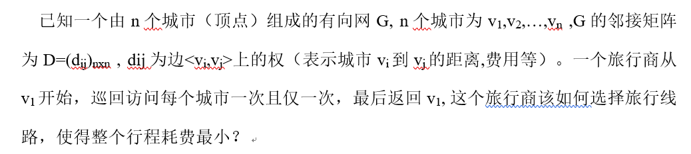
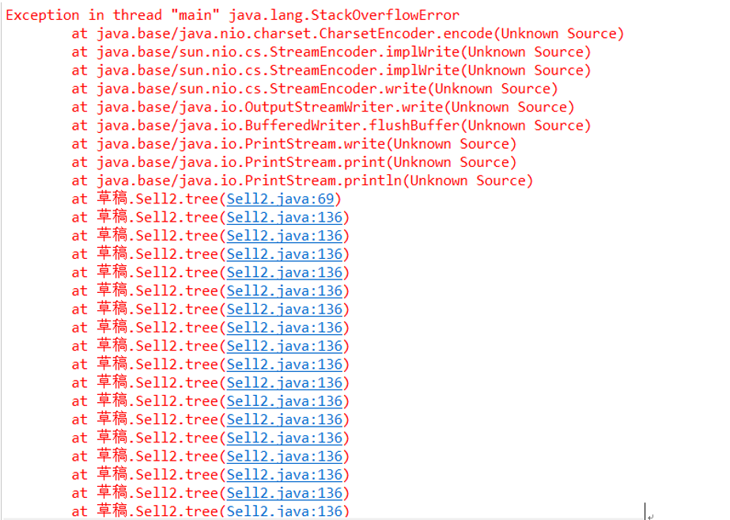
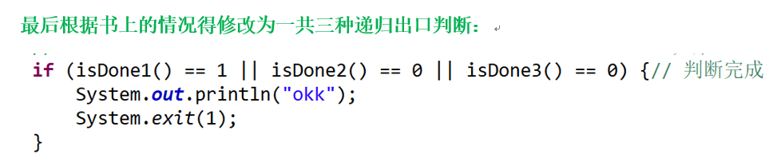
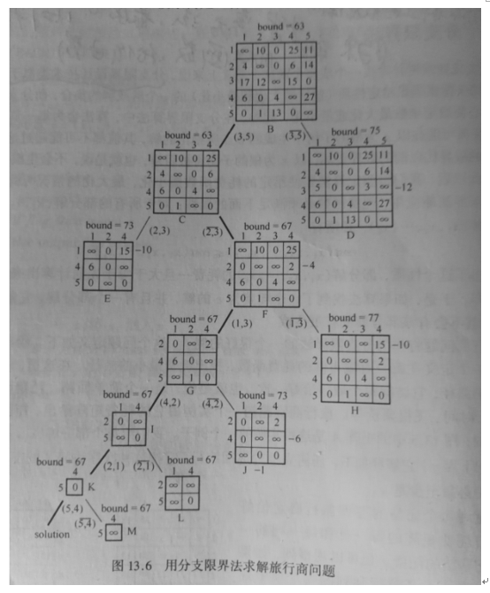

1、dfs
实验要求用多种思路完成，所以一开始就沿用了上一个实验马走棋盘的思路，添加了邻接矩阵来记录有向网的权值。总体思路还是DFS遍历搜索。
过程剪枝：
1、因为要求为最短路径，而一般情况总会存在多条可行路径，在判断过程中需要走过每一条路径才能知道该路径的长度，但如果已知一条可行路径的长度，在计算另一条路径的时候，若还未完成巡回但此时路径长度已经大于已知最短可行路径，那么这条路的最终长度就必定大于已知最短路径，此时就可以不必接下去计算当前路径。
2、之前得出的路径长度可以帮助之后的路径进行快速判断，如果我们尽早得出较短的可行路径，之后的工作也会进行得更快，由剪枝1引出剪枝2，每次选择到下一点路径长度最短的点前进，这样就能较快得到较短的可行路径。
2、分支限界法
按照书本上教我们的思路来实现分支限界法，首先对邻接矩阵进行初始化，求出其的最小下界和对应的矩阵，然后以这个矩阵为根节点，开始进行类似二叉树的遍历。
在这个过程中，需要保持矩阵每行或每列都必须有一个以上的0，还需要一个函数来找出所有行中最小数中最大的。然后下一步就要决定是否走该行距离为0的点，如果选择走，就将点对应的行和列去掉，若不选择该点，则将该点置为无穷大。并比较选与不选情况下的下界变化，选择下界较小的情况继续进行递归处理，直到矩阵消失或剩下全为无穷大的不可到达点。
遇到问题：根据以上的逻辑，在实际解决过程中，出现了爆栈的情况，通过调试发现程序运行情况和书本上不一样，书本上有一些变化并没有说明清楚，那么就需要重新考虑程序的递归出口解决爆栈问题。

最后根据书上的情况得修改为一共三种递归出口判断：

1、 若剩下的全是无穷远或0（默认跳过-1即不存在的）
2、 若剩下全是无穷远
3、 若剩下全是0
若满足以上任意一种判断，可以直接得出当前下界即为最短路径。

以DFS为主要算法，O(e+v)
时间复杂度（V边数+ E顶点数）
实际复杂度比上述要小，因为在实际中并不会完整遍历所有可行路径。
分支限界法完成比较匆忙，代码中要多次循环遍历数组，存在诸多冗余，若不急循环，程序需要的步数及为顶点数，当不断的循环判断使得复杂度难以估计。
1、DFS
1 public class Sell {
2 static int[][] byGroup;// 邻接矩阵
3 static int[] visit;// 0表示未访问 1表示访问
4 static int N;// 点的个数
5 static int minstep = 10000;// 最小步数
6
7 class ToNode {
8 int n;// 第n个点
9 int L;//// 当前点到第n个点的距离
10
11 public ToNode(int n, int l) {
12 this.n = n;
13 this.L = l;
14 }
15 }
16
17 public static Comparator<ToNode> LComparator = new Comparator<ToNode>() {// 优先队列的比較方法（到下一点的距离近到远
18 @Override
19 public int compare(ToNode tn1, ToNode tn2) {
20 return tn1.L - tn2.L;
21 }
22 };
23
24 public void init() {
25 Scanner sc = new Scanner(System.in);
26 System.out.println("please int N:");
27 N = sc.nextInt();
28 byGroup = new int[N][N];
29 visit = new int[N];
30 for (int i = 0; i < N; i++) {
31 for (int j = 0; j < N; j++) {
32 System.out.println("please int " + i + "-->" + j + " weight:");
33 byGroup[i][j] = sc.nextInt();
34 }
35 }
36 DFS(0, 0);// 从0点开始
37 }
38
39 public void DFS(int n, int step) {
40 if (visit[n] != 0 || step >= minstep) {// 当前点走过或当前已走长度大于已知最小可行长度
41 return;
42 }
43 if (step != 0) {// 第一次不赋值
44 visit[n] = 1;
45 }
46 int flag = 1;
47 for (int k = 0; k < visit.length; k++) {//判断是否走完所有点
48 if (visit[n] == 0) {
49 flag = 0;
50 break;
51 }
52 }
53 if (flag == 1 && n == 0) {// 巡回完成的判断
54 System.out.println("巡回完成");
55 if (step < minstep) {// 修改最短可行路径长度
56 minstep = step;
57 }
58 System.out.println("now donestep is:" + step);
59 }
60 Queue<ToNode> nodePriorityQueue = new PriorityQueue<>(N, LComparator);// 每次來個優先隊列從小到大
61 for (int i = 0; i < byGroup[0].length; i++) {
62 if (i != n) {
63 nodePriorityQueue.add(new ToNode(i, byGroup[n][i]));
64 }
65 }
66 while (!nodePriorityQueue.isEmpty()) {// 回溯
67 ToNode tn = nodePriorityQueue.poll();
68 DFS(tn.n, step + tn.L);
69 }
70 }
71
72 public static void main(String[] args) {
73 Sell s = new Sell();
74 s.init();
75 System.out.println("mini step is: " + minstep);
76 }
77 }
2、分支限界法
1 public class Sell2 {
2 static int[][] group = { { -2, 17, 7, 35, 18 }, { 9, -2, 5, 14, 19 }, { 29, 24, -2, 30, 12 },
3 { 27, 21, 25, -2, 48 }, { 15, 16, 28, 18, -2 } };
4 //-1表示不存在 -2表示无穷大到不了
5 //static int[] flag;//初始化时判断
6 static int[] hmin;// 每行对应的最小值
7 static int bound;
8 static int N = 5;
9 static int[] hz = new int[5];// 用来记录该行是否已经全为-1
10
11 public void init() {// 初始化分支界限树的根节点
12 Scanner sc = new Scanner(System.in);
13 System.out.println("please int N:");
14 // N = sc.nextInt();
15 // group = new int[N][N];
16 // group
17 int[] flag = new int[N];
18 hmin = new int[N];
19 /*
20 * for (int i = 0; i < N; i++) { for (int j = 0; j < N; j++) {
21 * System.out.println("please int " + i + "-->" + j + " weight:"); group[i][j] =
22 * sc.nextInt(); } }
23 */
24 int minh;
25 for (int i = 0; i < group[0].length; i++) {// 对行找最小并减去
26 minh = 10000;
27 for (int j = 0; j < group[0].length; j++) {// 找当前行的最小值
28 if (group[i][j] != -1 && group[i][j] != -2 && group[i][j] < minh) {
29 minh = group[i][j];
30 }
31 }
32 bound += minh;
33 for (int j = 0; j < group[0].length; j++) {// 对每个数减去最小值并给flag赋值
34 if (group[i][j] != -1 && group[i][j] != -2) {
35 group[i][j] -= minh;
36 if (group[i][j] == 0) {
37 flag[j] = 1;
38 }
39 }
40 }
41 }
42 int minl;
43 for (int i = 0; i < flag.length; i++) {
44 if (flag[i] != 1) {// 第i列
45 minl = 10000;
46 for (int j = 0; j < group[0].length; j++) {// 找当前列的最小值
47 if (group[j][i] != -1 && group[j][i] != -2 && group[j][i] < minl) {
48 minl = group[j][i];
49 }
50 }
51 bound += minl;
52 for (int j = 0; j < group[0].length; j++) {// 对每个数减去最小值并给flag赋值
53 if (group[j][i] != -1 && group[i][j] != -2) {
54 group[j][i] -= minl;
55 }
56 }
57 }
58 }
59 }
60
61 int minh = 10000;
62 int bigMin = 0;// 所有行的最小数中最大的
63
64 public void tree() {
65 System.out.println(bound);
66 int x, y = 0;// 每次对应的要或不要的点(x,y)
67 // ********************************************************如果
68 if (isDone1() == 1 || isDone2() == 0 || isDone3() == 0) {// 判断完成
69 System.out.println("okk");
70 System.exit(1);
71 }
72 x = findh();// 每行最小中最大的那个数的行
73 for (int i = 0; i < N; i++) {
74 if (group[x][i] == 0) {
75 y = i;
76 }
77 }
78 if (need(x, y) > dontneed(x, y)) {// 不要这个点
79 group[x][y] = -2;
80 // 检测每行是否都有0
81 int havaz = 0;
82 for (int i = 0; i < N; i++) {
83 havaz = 0;
84 for (int j = 0; j < N; j++) {
85 if (group[i][j] == 0) {
86 havaz = 1;// 有0
87 }
88 }
89 if (havaz == 0) {// 第i行没0
90 bound += hmin[i];
91 for (int t = 0; t < N; t++) {
92 if (group[i][t] != -2 && group[i][t] != -1) {
93 group[i][t] -= hmin[i];
94 }
95 }
96 }
97 }
98 tree();// 递归
99 } else {// 要这个点
100 hz[x] = 1;
101 if (group[y][x] != -1) {
102 group[y][x] = -2;
103 }
104 for (int i = 0; i < N; i++) {// 把行消除
105 group[x][i] = -1;
106 }
107 for (int i = 0; i < N; i++) {// 把列消除
108 group[i][y] = -1;
109 }
110 // 检测每行是否都有0
111 int havaz = 0;
112 for (int i = 0; i < N; i++) {
113 if (hz[i] != 1) {
114 havaz = 0;
115 for (int j = 0; j < N; j++) {
116 if (group[i][j] == 0) {
117 havaz = 1;// 有0
118 }
119 }
120 if (havaz == 0) {
121 bound += hmin[i];
122 for (int t = 0; t < N; t++) {
123 if (group[i][t] != -2 && group[i][t] != -1) {
124 group[i][t] -= hmin[i];
125 }
126 // group[i][t] -= hmin[i];
127 }
128 }
129 }
130
131 }
132 tree();// 递归
133 }
134 }
135
136 // 要和不要这个点对应的bound
137 private int need(int x, int y) {
138 int needbound = bound;
139 for (int i = 0; i < N; i++) {// 去掉行
140 group[x][i] = -1;
141 }
142 for (int i = 0; i < N; i++) {// 去掉列
143 group[i][y] = -1;
144 }
145 // 检测每行是否都有0
146 int havaz;
147 for (int i = 0; i < N; i++) {
148 if (hz[i] != 1) {
149 havaz = 0;
150 for (int j = 0; j < N; j++) {
151 if (group[i][j] == 0) {
152 havaz = 1;// 有0
153 }
154 }
155 if (havaz == 0) {
156 needbound += hmin[i];
157 }
158 }
159
160 }
161 return needbound;
162 }
163
164 private int dontneed(int x, int y) {
165 int dontneedbound = bound;
166 // 检测每行是否都有0 (去掉xy点)
167 int havaz;
168 for (int i = 0; i < N; i++) {
169 if (hz[i] != 1) {
170 havaz = 0;
171 for (int j = 0; j < N; j++) {
172 if (i != x && j != y && group[i][j] == 0) {
173 havaz = 1;// 有0
174 }
175 }
176 if (havaz == 0) {// 这行没0
177 dontneedbound += hmin[i];
178 }
179 }
180 }
181 return dontneedbound;
182 }
183
184 private int findh() {// 找出每行最小中最大的那个数在哪一行
185 int bigMin = 0;// 所有行的最小数中最大的
186 int minh, h = 0;
187 for (int i = 0; i < group[0].length; i++) {// 对行找最小并减去
188 if (hz[i] != 1) {
189 minh = 10000;
190 for (int j = 0; j < group[0].length; j++) {// 找当前行的最小值
191 if (group[i][j] != -1 && group[i][j] != -2 && group[i][j] != 0 && group[i][j] < minh) {
192 minh = group[i][j];
193 }
194 }
195 hmin[i] = minh;// 更新当前行的最小值
196 if (minh >= bigMin) {
197 bigMin = minh;
198 h = i;
199 }
200 }
201
202 }
203 return h;
204 }
205
206 private int isDone1() {// 判断是否完成
207 int zn = 0;// 0的个数 如果只剩一个0就完成
208 for (int i = 0; i < N; i++) {
209 for (int j = 0; j < N; j++) {
210 if (group[i][j] == 0) {
211 ++zn;
212 }
213 }
214 }
215 return zn;// 返回当前一共有几个0
216 }
217
218 private int isDone2() {// 判断是否完成 如果除了-2就是0或-1 也算完成
219 int haszt = 0;// 不是0和-2的个数
220 for (int i = 0; i < N; i++) {
221 for (int j = 0; j < N; j++) {
222 if (group[i][j] != 0 || group[i][j] != -2 || group[i][j] != -1) {
223 ++haszt;
224 }
225 }
226 }
227 return haszt;
228 }
229
230 private int isDone3() {// 判断3
231 int haszt = 0;// 不是-2的个数
232 for (int i = 0; i < N; i++) {
233 for (int j = 0; j < N; j++) {
234 if (group[i][j] != -2) {
235 ++haszt;
236 }
237 }
238 }
239 return haszt;
240 }
241
242 public static void main(String[] args) {
243 Sell2 s2 = new Sell2();
244 s2.init();
245 s2.tree();
246 System.out.println("bound:" + bound);
247 }
248 }